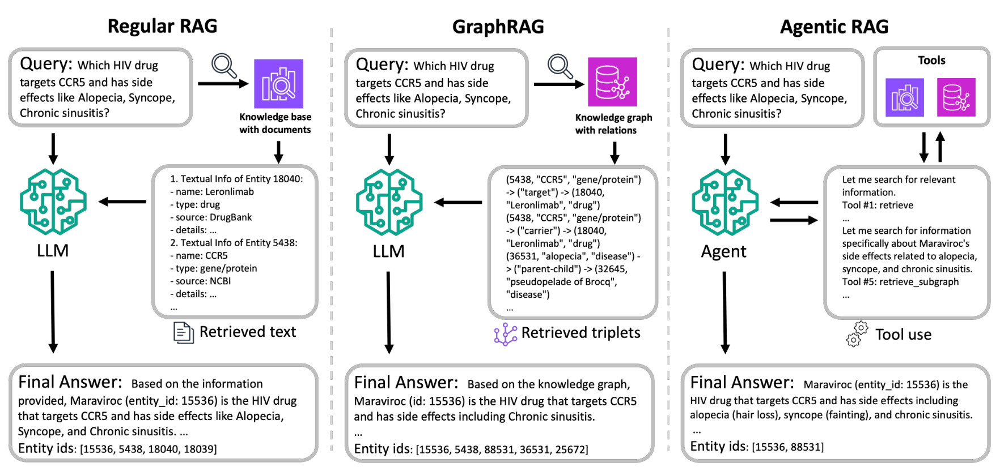
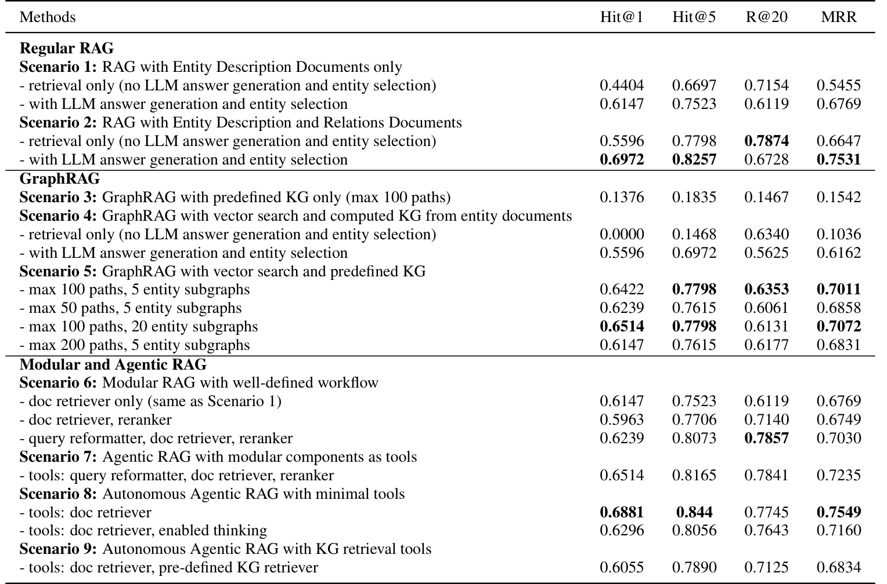
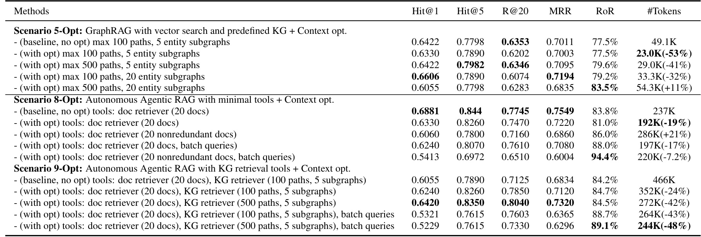
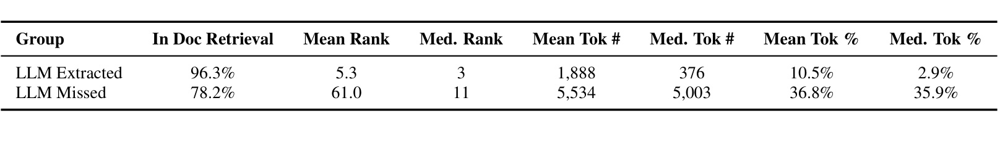
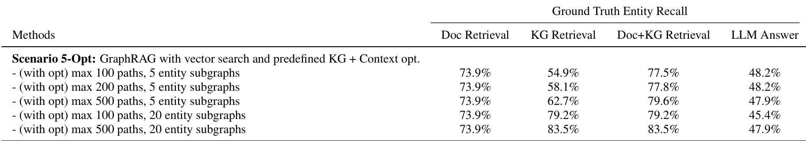
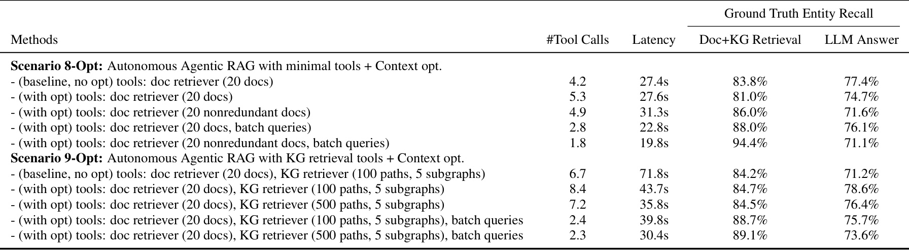
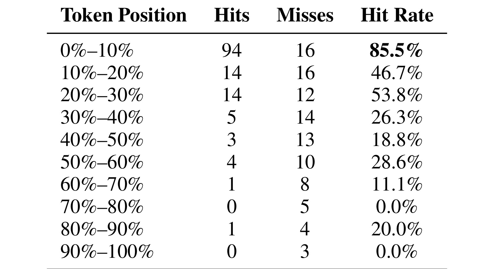
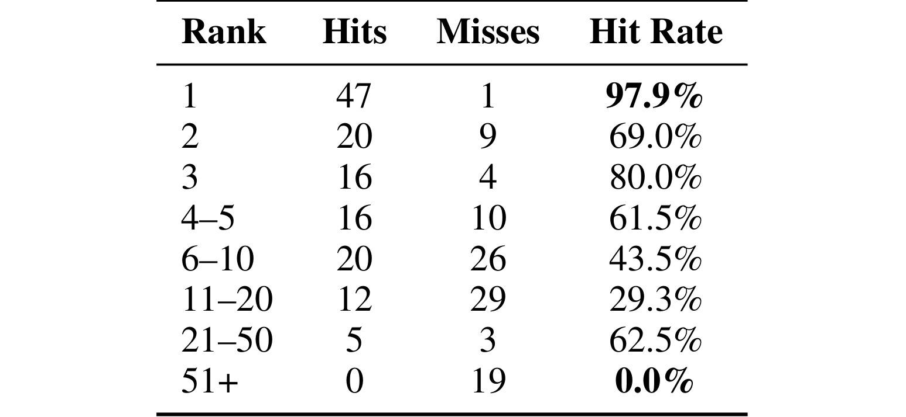
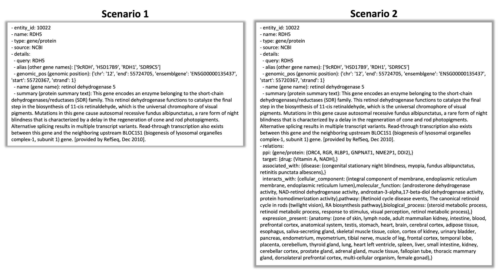
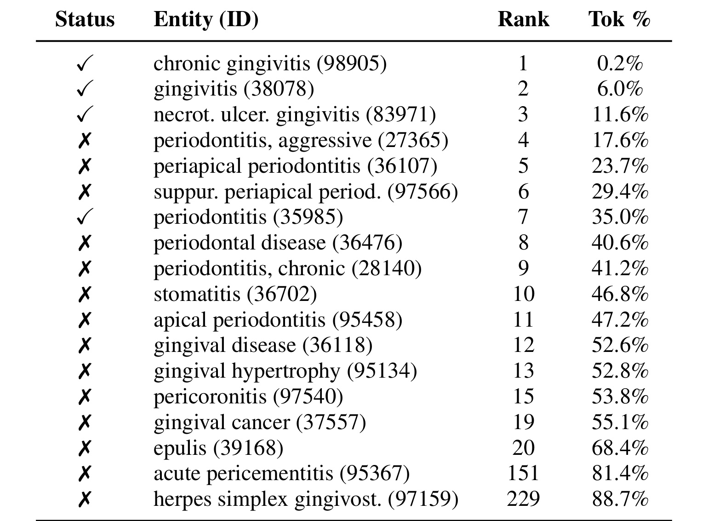

这篇论文讨论的不是“GraphRAG 是否先进”这种抽象问题，而是把 Regular RAG、GraphRAG、Modular RAG 和 Agentic RAG 放到同一个半结构化知识库任务中比较：当知识库同时有实体文本和实体关系时，系统到底应该只做文本检索、把一跳关系拼进文档、走图检索，还是让 Agent 自主调用检索工具。论文作者来自 AWS Generative AI Innovation Center 与 Cisco Systems，论文入口是 arXiv:2606.25656。arXiv 摘要页未直接给出独立代码仓库，本轮未核验到可运行代码。
随着 GraphRAG 和 Agentic RAG 被快速引入真实知识库系统，真正的问题不是能否把图、工具和多步规划接进 RAG，而是这些更复杂的架构在什么数据条件、查询复杂度和上下文预算下才带来可衡量收益；如果检索范围扩大却没有等比例改善生成质量，单看 Hit@k、MRR 这类检索指标就可能高估高级检索路线的价值。
1. 背景和问题
RAG 的基本承诺是用外部知识约束大模型生成，让回答不只依赖模型参数记忆。最常见的做法是把文本切成文档或 chunk，向量检索出若干候选，再把它们拼进上下文供 LLM 作答。这个方案在纯文本问答里很稳，但真实知识库经常不是纯文本：一个实体既有描述文档，又有显式关系；一个问题可能要求同时满足多个实体属性、关系约束和多跳条件。论文在引言里给出的精密医学例子是：用户问某个基因是否参与特定通路、位于特定结构并与某个生物过程相关，这类查询很难只靠“相似文本”解决，因为答案往往藏在实体属性和实体之间的结构化关系里。
GraphRAG 正是在这个背景下流行起来的。它把知识图谱的节点、边、关系类型引入检索过程，试图让系统能沿着实体关系做多跳扩展；Modular RAG 则把 query reformulation、retrieval、reranking、generation 拆成可替换组件；Agentic RAG 更进一步，把这些组件或检索器做成工具，让 Agent 根据查询动态规划下一步。问题在于，这些路线都增加了系统复杂度、调用成本和上下文压力。GraphRAG 会把图路径序列化成三元组，Agentic RAG 会反复把历史观察塞回模型上下文；如果检索越多但生成阶段用不上，架构越复杂反而可能只是在制造更大的上下文噪声。
这篇论文的价值在于它没有直接为 GraphRAG 背书，而是把问题改写成工程选型题：在有文本和关系两种资源的半结构化知识库中，什么时候普通 RAG 足够，什么时候简单关系增强文档就够，什么时候确实需要图检索或 Agent 自主规划。这个问题对企业知识库、医学知识检索、推荐系统内容理解和内部数据问答都很现实。很多系统上线时会默认“图谱更强”“Agent 更智能”，但如果真实瓶颈是 token 预算、上下文排序、生成阶段抽取能力或查询本身只需一跳关系，那么复杂架构未必带来收益。
论文的第二个重要背景是评价指标错位。传统 STaRK 这类检索 benchmark 更强调 raw retrieval ranking，例如答案实体是否进入前 k 个候选。本文把评价改成端到端生成质量：LLM 不仅要读上下文，还要输出自然语言答案和更窄的 entity ID 集合，再用 Hit@1、Hit@5、R@20、MRR 衡量这个最终集合。这个设置暴露了一个关键事实：检索阶段覆盖到答案实体，不等于生成阶段会把它们选出来。后文的 Table 3、Table 6、Table 7 和 Table 8 都在说明同一件事：答案实体如果在上下文中太靠后、rank 太低、语义上不像用户期望的“典型答案”，就可能被 LLM 忽略。
因此，这篇论文不是一篇单纯的 GraphRAG 方法论文，而是一篇 RAG 架构对照实验和 context engineering 论文。它更像是在提醒读者：架构复杂度、上下文长度、检索覆盖率和生成阶段利用率必须被放在同一张账本里核算，不能把其中任何一项单独当作系统能力的代理指标。它提出九个标准化场景，覆盖普通文本 RAG、关系增强文本 RAG、预定义 KG GraphRAG、文档抽取 KG GraphRAG、文本+预定义 KG 混合 GraphRAG、固定模块流水线、带工具 Agent、极简工具 Agent、带 KG 工具 Agent。然后作者在同一个 STaRK-Prime 精密医学知识库上比较这些场景，进一步提出关系分组、图/文档去重、batch agentic retrieval 等上下文优化手段，观察它们对 token 用量和生成质量的影响。
2. 方法
2.1 问题定义与半结构化知识库
论文把任务定义在半结构化知识库上：知识库一边是文本集合，另一边是知识图谱。每个实体既有一个文本描述文档，也有图上的对应节点；用户查询可能同时包含实体名、关系条件和自然语言约束。最基础的符号定义是：这组符号把文本世界和图世界绑定到同一个实体索引上，后续九种场景的差别，本质上就是怎样检索、压缩、排序和组合这两类证据。
符号解释：\(G\) 是知识图谱，\(V\) 是实体节点集合，\(R\) 是节点之间的关系集合；\(D\) 是文本描述文档集合，\(d_i\) 表示实体 \(i\) 的文本描述，\(v_i\) 表示同一个实体在图谱里的节点。这个定义强调同一实体有两种表示：文本表示适合语义匹配，图节点和关系适合结构约束。
作者在 GraphRAG 场景里又显式写成：这里把边集合单独拿出来，是为了说明 GraphRAG 不只是多一个数据源，而是多了可遍历、可截断、可序列化的结构化对象。后续 Scenario 3 到 Scenario 5 的差异，都围绕这组结构对象如何进入上下文展开：只用图、从文档抽图、或把文本与预定义图谱合并。
符号解释：\(E\) 是图中的边，\(R\) 是关系类型。这个三元定义把“实体有哪些关系”从抽象集合推进到可遍历的边集合。对生产系统来说，这一步的含义是：如果你的知识库只有文档，没有可靠图谱，那么 GraphRAG 的前提并不成立；如果图谱存在但关系质量很差，图检索也可能把错误结构放大。
2.2 从 Regular RAG 到关系增强文档
Regular RAG 的 Scenario 1 只索引实体描述文档。给定查询 \(q\)，系统用向量相似度检索若干文档，把它们拼接为上下文，再让 LLM 输出答案和 entity IDs。这个方案代表最常见的企业 RAG 基线，优点是简单、成本低、容易部署；缺点是它没有显式关系视角，如果问题要求“同时满足某几个关系条件”，相似文本可能无法直接给出结构证据。
Scenario 2 仍然不做图搜索，而是把实体的一跳邻居按关系类型拼进实体文档。也就是说，它没有引入复杂 GraphRAG pipeline，只是让文档从“实体描述”变成“实体描述 + 关系摘要”。这个设计很关键，因为它给了本文一个强基线：如果把一跳关系以紧凑、可读的方式直接提供给 LLM，普通向量检索也可能获得足够的关系信息。

Figure 1 展示了三类路线的差别。左侧 Regular RAG 只有一个文档知识库，检索结果是文本；中间 GraphRAG 使用知识图谱，检索结果被序列化为三元组；右侧 Agentic RAG 则把文档检索和图检索包装成工具，Agent 在多轮思考、调用、观察中决定下一步。这个图的重点不只是流程不同，而是上下文形态不同：Regular RAG 给 LLM 的上下文更像自然语言段落，GraphRAG 给的是关系三元组，Agentic RAG 给的是多轮工具轨迹和检索结果。后文实验中 GraphRAG 不总是胜出的原因，就和这些上下文形态有直接关系。图中还隐含了一个评价口径差异：左侧和中间可以看成一次性检索再生成，右侧则要把工具调用历史也纳入生成状态；因此同样的答案质量，在 Agentic RAG 中往往意味着更多轮次、更多 token 以及更高的上下文管理要求。

Figure 2 解释了 Scenario 2 为什么是一个不该被轻视的强基线。左侧 Scenario 1 文档只有实体 RDH5 的描述、别名、摘要等字段；右侧 Scenario 2 在同一个文档后面加入了 relations 字段，例如 interacting、target、associated_with、表达位置和生物过程等。这种做法没有额外图遍历，也没有 Agent 规划，但它把 LLM 需要的局部关系压缩进可读文档。相比 GraphRAG 把每条边写成重复三元组，关系增强文档对同一实体的多个关系进行了自然分组，可能更符合 LLM 的注意力利用方式。它也说明“图信息”并不必然等于“图检索系统”：如果业务只需要局部邻居和关系类型，提前把这些关系压进文档，有时比在线遍历、序列化子图、再交给模型读三元组更稳定。
2.3 GraphRAG 三种图谱来源与混合检索
GraphRAG 部分有三个场景。Scenario 3 只使用预定义 KG，不使用文本描述。系统先让 LLM 从查询中抽取实体名；如果实体抽取失败，后续图遍历会从错误入口扩展，这也是纯图方案在实验里表现很弱的原因之一。它把语义理解压力前置到 entity extraction，而不是让文本检索先提供候选语境：
符号解释：\(E_q\) 是从查询 \(q\) 中抽取出来的相关实体集合，\(e_1\) 到 \(e_m\) 是候选实体名。这个步骤的风险在于，实体抽取错了，后续图遍历就会从错误节点开始。
随后系统从每个实体出发做图遍历，得到子图；这个子图要再被线性化为文本上下文，因此遍历范围和序列化方式会同时影响覆盖率、token 成本和模型注意力分布。也就是说，GraphRAG 的检索参数不是单纯召回参数，它会直接改变生成模型看到的信息密度：
符号解释：\(G^{(i)}_{sub}\) 是围绕实体 \(e_i\) 抽取的子图，\(\subseteq G\) 表示它只是完整知识图谱的一部分。论文实验里预定义 KG 来自 STaRK-Prime / PrimeKG，图检索设置为 2-hop，并限制最多 100 条 paths 以避免邻居爆炸。
Scenario 4 使用 entity documents 自动构建 computed KG，再把文档向量检索和这个计算图谱结合起来。它考验的是“没有高质量预定义图谱时，自动抽取图能否补上关系结构”。Scenario 5 则是更强的混合 GraphRAG：先做向量检索拿到候选实体和文本，再围绕这些实体从预定义 KG 中抽子图，最后把文本和图上下文一起交给 LLM：
符号解释：\(C_{docs}\) 是文本检索得到的上下文，\(C_{graph}\) 是图检索和序列化后的上下文，\(C_{hybrid}\) 是二者的并集。这个公式看起来简单，但它正是 GraphRAG 的成本来源：文本和图都进上下文，覆盖率可能上升，token 用量、重复信息和位置衰减也会同时上升。
2.4 Modular / Agentic RAG 与工具编排
Modular RAG 的 Scenario 6 把流程固定成 query reformulation、vector retrieval、reranking、answer generation。向量检索得到候选文档集合；这个集合先服务 reranking，再服务生成，因此模块化流水线的可控性来自每一步都有明确输入输出和替换边界：
符号解释：\(D_{candidates}\) 是检索器返回的候选文档集合，\(d_1\) 到 \(d_k\) 是按相似度或后续排序进入流水线的文档。固定模块化的好处是每一步可控，缺点是流程不够自适应。
Scenario 7 把 query reformatter、document retriever、reranker 都变成 Agent 可调用的工具，Agent 自己决定调用顺序和次数。论文用下面的形式描述工具调用序列；相比固定 workflow，这个表示把系统决策权交给模型，也把失败点扩展到工具选择、调用顺序、停止条件和会话历史管理：
符号解释：\(T\) 是工具集合，\(t_i\) 是第 \(i\) 次工具调用。这个符号背后是一个工程差异：固定 workflow 由人写死，Agentic workflow 由模型动态规划。Scenario 8 进一步减少工具，只保留 document retriever，把 query reformulation、reranking、entity selection 都写进系统提示，让模型内部完成；Scenario 9 在 Scenario 8 基础上再给一个 predefined KG retriever。作者后面的结果显示，工具更多不一定更好，极简工具 Agent 反而是若干场景里最强的配置之一。
2.5 上下文优化与批量 Agentic Retrieval
论文的上下文优化首先针对 GraphRAG 的三元组冗余。传统表示会写成大量重复三元组；当路径数和子图数增加时，重复实体名会迅速吞掉上下文预算，也会把真正有用的关系推到更靠后的位置。这种冗余在短查询里可能不明显，但在多实体、多路径的图检索里会变成主要成本来源：
当同一对实体有多种关系时，实体名会重复出现。作者提出关系分组表示；它保留同一实体对之间的多关系信息，但把重复 subject/object 折叠掉。这个改写还让模型更容易把“两个实体之间有哪些关系”当成一个局部事实单元，而不是在多行三元组之间重新拼装：
符号解释：左侧是常规三元组；右侧把同一实体对之间的多个关系合并成关系集合。这个压缩不是语义创新，而是 context engineering：它减少重复 token，让 LLM 更容易在有限窗口里看到有效关系。
第二类优化是图和文档去重。Agent session 中反复检索会积累重复子图、重复文档和重复 chunk，作者维护一个统一子图，并用 entity-level、relation-level 和 content hash 做去重。Batch Agentic Retrieval 的核心状态更新可以写成：
符号解释：\(M\) 是 Agent memory，\(R_{new}\) 是本轮 batch retrieval 后去重得到的新结果。只有新信息进入记忆，避免每次工具调用都把旧结果重复注入上下文。
Algorithm 1 的最终生成步骤是；这一步也对应本文最重要的评价转向：系统必须证明检索结果能被生成阶段用进答案，而不只是证明答案实体曾经出现在候选池里。它把 batch retrieval、memory dedup 和 answer generation 连成闭环，最终验收点仍然落在 entity IDs 是否被模型选出：
符号解释：\(q\) 是原查询，\(M\) 是去重后的记忆，\(a\) 是自然语言答案，\(E\) 是答案中使用或选出的 entity ID 集合。这个公式对应本文评价方式：最终不是只看检索列表，而是看 LLM 生成阶段是否真的选出了正确实体。
Batch strategy 的设计介于 ReAct 和 ReWOO 之间。传统 ReAct 是一次想一个 query、调用一次工具、观察一次结果，再进入下一轮；作者让 Agent 在一次行动中规划多个互补子查询，并用单次 batched retrieval 执行。这样可以减少 LLM round-trip，因为每一次工具调用都会重新携带会话历史。但后文 Table 2 和 Table 5 也说明，batch 并非总是提升生成质量：它扩大了检索覆盖，却可能把过多文本和图结果同时塞进上下文，反而削弱 LLM 的选择能力。
3. 实验结果
3.1 设置：STaRK-Prime 与端到端生成评价
实验使用 STaRK-Prime 精密医学数据集。它包含约 129K 个疾病、药物、蛋白、基因等实体，实体文本来自多源描述，关系来自 PrimeKG 中约 8.1M 条 KG relations。作者把预定义 KG 导入 Amazon Neptune Analytics Graph，用 LlamaIndex 加载为 property graph index，并用 CypherTemplateRetriever 做图检索；文档检索器基于 Amazon Bedrock Knowledge Bases、Amazon Titan Text Embedding v2 和 OpenSearch Serverless。每次文档检索返回 20 个文档，核心 LLM 使用 Claude 3.7 Sonnet。
这套设置有两个要点。第一，它不是玩具图谱：实体和关系规模足够大，能暴露图检索的成本、路径爆炸和上下文溢出问题。第二，指标不是只评 raw retrieval。LLM 需要生成答案并返回 entity IDs，系统再用 Hit@1、Hit@5、R@20、MRR 评估生成阶段选出的实体集合。上下文优化实验还额外报告 RoR 和平均 token 用量。RoR 看的是生成前 ground-truth entity IDs 被检索覆盖的比例，而 LLM Answer 看的是生成后被真正选出来的比例，二者差异就是本文所说 retrieval-generation gap 的基础。
3.2 九种场景的主结果

Table 1 是回答标题问题的核心证据。Regular RAG 中，Scenario 1 只用实体描述文档，加入 LLM answer generation 和 entity selection 后 Hit@1 从 0.4404 提升到 0.6147，MRR 从 0.5455 到 0.6769；Scenario 2 把一跳关系拼进文档后，with LLM processing 达到 Hit@1 0.6972、Hit@5 0.8257、MRR 0.7531，是全表中非常强的结果。这个结论很反直觉：简单关系增强文档比多个 GraphRAG 变体更强，说明“关系信息如何表示给 LLM”可能比“是否调用图检索”更重要。
GraphRAG 三个场景表现差异很大。Scenario 3 只用预定义 KG，Hit@1 只有 0.1376，MRR 0.1542，说明纯图搜索缺少文本语义支撑时很弱。Scenario 4 自动从文档构建 computed KG，retrieval-only 的 Hit@1 甚至为 0.0000，with LLM 后提升到 0.5596，但仍不如 Scenario 2。Scenario 5 结合向量文本检索和预定义 KG，表现比纯图好，但多个设置的 Hit@1 约在 0.6147 到 0.6514 之间，仍低于 Scenario 2。这说明 GraphRAG 的收益很依赖图谱质量、子图表示和参数选择；把更多图路径拼进上下文不自动等于更好答案。
Modular 和 Agentic RAG 的结果也很有意思。固定模块流水线 Scenario 6 随着 reranker、query reformatter 加入而变好；Scenario 7 把同样组件变成工具后，Hit@1 0.6514、MRR 0.7235，说明 Agent 自主规划有一定收益。最强的是 Scenario 8 的极简工具 Agent：只给 doc retriever，却达到 Hit@1 0.6881、Hit@5 0.844、MRR 0.7549。相比之下，给 Scenario 9 再加 KG retriever 反而降到 Hit@1 0.6055。这里的启发是，Agent 的推理和查询重写能力可能比工具数量更关键；图工具如果带来更长、更杂的上下文，可能抵消结构信息收益。
3.3 上下文优化的收益和反直觉代价

Table 2 展示 context optimization 的主要结果。Scenario 5-Opt 在 max 100 paths、5 entity subgraphs 的 baseline 下平均 49.1K tokens；加入关系分组和去重后降到 23.0K，减少 53%，Hit@5 从 0.7798 到 0.7890，MRR 基本持平。这说明 GraphRAG 里的三元组冗余确实严重，压缩表示能显著降低成本。进一步把 max paths 提到 500 时，仍比 baseline 少 41% tokens，Hit@5 达到 0.7982。但当同时提高到 500 paths 和 20 subgraphs 时，RoR 到 83.5%，token 却涨到 54.3K，Hit@1 降到 0.6055，说明“省下的 token 用来扩大检索”也有边界。
Agentic RAG 的结果更复杂。Scenario 8-Opt 中，仅去重 20 docs 从 237K 降到 192K，减少 19%，但 Hit@1 从 0.6881 降到 0.6330；20 nonredundant docs 反而涨到 286K，效果也变差。batch queries 可以提高 RoR 到 88.0% 或 94.4%，但 Hit@1 并没有随之提高。Scenario 9-Opt 里，加入 KG retriever 后 baseline 是 466K tokens；优化后 100 paths/5 subgraphs 可降 24%，500 paths/5 subgraphs 可降 42% 且 MRR 提高到 0.7320；但 batch queries 版本虽然 token 降到 264K/244K，Hit@1 却只有 0.5321/0.5229。这个表说明优化不是单调收益：减少重复上下文有益，但批量扩大检索可能制造更难利用的上下文。
3.4 Retrieval-generation gap：检索覆盖和生成利用脱钩

Table 3 用一个很小的表揭示了大问题。在 Scenario 5-Opt 的分析中，被 LLM 抽取出来的实体有 96.3% 位于文档检索结果中，平均 rank 是 5.3，平均 token 位置约 10.5%；漏掉的实体虽然也有 78.2% 位于文档检索结果中，但平均 rank 变成 61.0，平均 token 位置约 36.8%。换句话说，答案实体“被检索到”只是第一关；如果它在上下文中排得靠后，或者被大量图三元组和文档内容挤到中后段，生成阶段就可能看不见、用不上或不愿选。这个表还提示，生成质量诊断不能只问“召回有没有覆盖答案”，还要继续问“答案实体在上下文中的相对位置、rank 和前后噪声是什么”。因此它也是后续 Table 6 和 Table 7 的总入口。

Table 4 进一步说明 retrieval coverage 和 generation quality 的脱钩。Scenario 5-Opt 的 Doc Retrieval 一直是 73.9%，但 KG Retrieval 随参数扩大从 54.9% 上升到 83.5%，Doc+KG Retrieval 也从 77.5% 上升到 83.5%。按检索视角看，这是明显提升；但 LLM Answer recall 从 48.2% 到 47.9%，甚至在 20 entity subgraphs 时掉到 45.4%。这正是本文最重要的负结果之一：GraphRAG 能把更多正确实体带进上下文，却不能保证 LLM 在最终答案中使用它们。对工程系统来说，这意味着仅用检索覆盖率验收 GraphRAG 可能会误判。

Table 5 把同样的问题放到 Agentic RAG。Scenario 8-Opt baseline 平均 4.2 次工具调用、27.4 秒延迟，Doc+KG Retrieval 83.8%、LLM Answer 77.4%。一些优化版本减少或改变工具调用，但 LLM Answer 并不稳定。Scenario 9-Opt 中，KG 工具 baseline 平均 6.7 次工具调用、71.8 秒延迟；某些优化配置把延迟降到 35.8 秒或 30.4 秒，也能保持更高检索覆盖，但 batch 版本 LLM Answer 只有 75.7% 或 73.6%。这说明 Agentic RAG 的成本不只是检索量，还包括每一次工具调用重新携带会话历史的开销；batch 能减少 round-trip，却可能牺牲中间推理和逐步收敛。
3.5 位置、rank 和案例：为什么 LLM 没有用上检索结果

Table 6 把位置衰减拆得更细。答案实体如果出现在上下文前 10%，命中率是 85.5%；10%-20% 降到 46.7%，20%-30% 是 53.8%，30%-40% 只有 26.3%。到 70%-80% 和 90%-100% 区间，命中率是 0。这个结果和 lost-in-the-middle 现象一致，也解释了为什么 GraphRAG 和 Agentic RAG 的长上下文会有风险：它们可能把正确实体带进来了，但放在模型注意力不敏感的位置。关系分组、去重和上下文重排的目标，就不只是省 token，而是让关键实体更早、更集中、更不被重复信息淹没。对生产系统来说，这张表的实际含义是：如果 prompt 模板总把最关键证据放在工具轨迹和长列表之后，扩大检索只会把有效信息推得更远。

Table 7 从 rank 角度补充同一个结论。rank 1 的实体命中率 97.9%，rank 2 是 69.0%，rank 3 是 80.0%；rank 6-10 掉到 43.5%，rank 11-20 是 29.3%，rank 51+ 为 0。作者还提醒 21-50 的 62.5% 样本数只有 8，不能过度解读。这个表说明 LLM 生成阶段仍然强依赖检索排序：即便答案实体已经进入上下文，如果排序很低，也很难被抽取。对 RAG 系统来说，reranking、context ordering、answer-aware selection 可能和扩大 retrieval scope 同样重要。尤其在 GraphRAG 中，图路径数量一旦增加，rank 低但仍正确的实体会越来越多，若没有二次排序或答案感知压缩，模型很难从长尾实体中恢复完整答案集。

Table 8 给出一个牙龈疾病查询案例。LLM 抽取了 rank 1 的 chronic gingivitis、rank 2 的 gingivitis、rank 3 的 necrotizing ulcerative gingivitis，也抽取了 rank 7、token 位置 35.0% 的 periodontitis；但它漏掉了 rank 4-6 的几个 subtype，也漏掉了后面许多相关实体。这个案例说明位置不是唯一因素，语义典型性也很重要：periodontitis 作为更 canonical 的答案，即使位置不算最靠前，仍可能被模型选中；一些更细分、较长或不那么典型的实体，即使更早出现，也可能被漏掉。作者把这归因于位置衰减、语义偏好和 query-induced cardinality expectations 三个因素。
综合这些实验，本文对“GraphRAG 是否需要”的回答是条件式的。若知识库只有文本，普通 RAG 是合理基线；若有可靠一跳关系，先尝试关系增强文档可能比直接上复杂 GraphRAG 更划算；若查询确实需要多跳图关系且预定义 KG 质量高，GraphRAG 有价值，但必须处理三元组冗余、上下文排序和生成阶段利用率；若查询需要动态探索，Agentic RAG 可以更灵活，但工具越多、history 越长，越需要 memory management 和 batch/去重策略。
4. 总结
4.1 我的判断
这篇论文最值得记住的结论不是“GraphRAG 不需要”，而是“GraphRAG 不能作为默认更优选项”。它在 STaRK-Prime 上显示，简单的一跳关系增强文档可以超过多个 GraphRAG 设置；极简工具 Agent 可以超过带 KG 工具的 Agent；扩大检索覆盖率可以提高 RoR，却不能保证 LLM Answer recall 提升。这些结论对生产 RAG 很有约束力：架构选择应从查询类型、图谱质量、上下文预算和生成阶段可利用性出发，而不是从方法名出发。
本文的 context optimization 也很实用。关系分组表示、图/文档去重、统一 agent memory、batch retrieval 都是可迁移到工程系统里的技巧。尤其是关系分组，它提醒我们：GraphRAG 的关键不只是“检索图”，还包括“如何把图写给 LLM 看”。同一条结构信息如果被写成大量重复三元组，既浪费 token，也会把重要实体推到上下文中后段；如果按实体对和关系集合压缩，可能更接近 LLM 的阅读习惯。
4.2 局限与风险
第一，实验只有一个主数据集 STaRK-Prime，领域是精密医学。这个领域的实体关系很密、术语规范、KG 质量较高，结果未必能直接外推到企业文档、法律合同、客服知识库或推荐系统内容库。第二，所有实验使用 Claude 3.7 Sonnet，模型换成不同上下文长度、不同注意力行为、不同工具调用能力的 LLM 后，相对排序可能变化。第三，作者承认没有穷尽所有 GraphRAG 参数，Scenario 5 的 hops、paths、subgraphs、context ordering 都可能继续优化。第四，评价仍主要围绕 entity ID 命中，没有评估自然语言答案事实性、幻觉率和临床可用性，因此不能把结果解释为医疗问答质量评测。
还有一个更隐蔽的风险：本文的负结果可能被误读成“不该用图”。实际上，Table 1 已经显示关系信息很有价值，Scenario 2 和 Scenario 5 都比纯文本基线更能利用关系；真正的问题是关系信息的表示、排序和生成利用。如果业务问题天然是图结构问题，例如多跳约束、路径解释、实体消歧、权限/血缘/供应链查询，GraphRAG 仍然可能必要，但上线前要用生成端指标而不是检索端指标验收。
4.3 后续跟进
后续我会重点跟三条线。第一，是否有工作把 GraphRAG 的 context ordering 做成 answer-aware 或 salience-aware，而不是简单按检索顺序拼接。本文已经证明 token 位置和 rank 对 LLM extraction 很敏感，下一步应该是让关键实体更早出现、减少长尾噪声。第二，是否有 benchmark 同时评估 retrieval coverage、generation utilization、faithfulness 和 latency，因为单一 Hit@k 无法覆盖真实 RAG 体验。第三，是否有工业系统报告“关系增强文档 vs 图检索 vs Agent 工具编排”的分层策略，例如先用一跳关系增强文档作为低成本基线，只有在查询复杂度或用户意图触发时才升级到 GraphRAG/Agentic RAG。
如果把这篇论文迁移到推荐系统语境，最直接的启发是内容/用户/商品知识库也常是半结构化的：item 有文本描述、类目、标签、作者、消费关系、共现关系和图谱边。推荐系统不一定要一开始就上完整 GraphRAG；先把少量高置信一跳关系压进可检索文档，可能已经能提升 LLM reranking、解释生成或用户画像问答。只有当任务需要跨实体多跳推理、图路径解释或动态探索时，再考虑 GraphRAG 或 Agentic RAG，并且必须用生成阶段指标检查“检索到的关系是否真的被模型用上”。